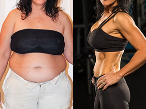
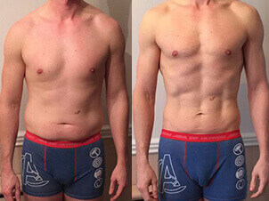
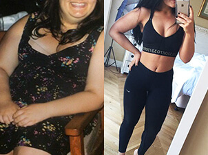
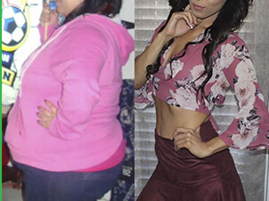
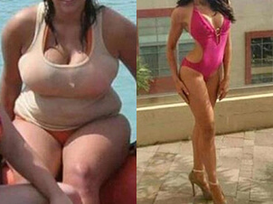

- Migliora la digestione
- 100 % naturale
- Accelera il metabolismo, anche a riposo
Prima di sviluppare Black Latte, sono state esaminate le proprietà disintossicanti e brucia grassi di oltre 2000 prodotti alimentari. In base a questi risultati, è stata creata una formula detox unica che agisce in armonia con i bioritmi umani.
I microlementi innescano il processo di depurazione nell'organismo e regolano la sensazione di fame, mentre gli acidi organici accelerano la combustione dei grassi.
BLACK LATTE TI FARÀ SENTIRE CARICO TUTTO IL GIORNO!
Una combinazione unica di componenti promuove il funzionamento sano dell'intestino. Durante il giorno, questa formula ti proteggerà da pesantezza, gonfiore e irritazione dello stomaco. Il cibo che consumerai verrà digerito rapidamente e non si trasformerà in grasso.
- Migliorano la digestione
- Accelerano la combustione dei grassi.
- Riducono i livelli di glucosio e di colesterolo nel sangue
- Sopprimono l'appetito
Black Latte TI FARÀ SENTIRE CARICO TUTTO IL GIORNO!
Il tuo corpo si trasforma grazie alla speciale combinazione di sostanze naturali, che apportano energia e accelerano la combustione dei grassi
Variazioni di peso corporeo, kg
- -15
- -12
- -10
- -5
- -3
mese
- 1
- 2
- 3
- 4
- 5
- Diete comuni
- Black Latte
mantenimento del peso, kg
- 80
- 70
- 60
- 50
- 45
mese
- 1
- 2
- 3
- 4
- 5
- Diete comuni
- Black Latte
-

Sciogliere un cucchiaio pieno di Black Latte in un bicchiere di acqua calda
-

Assumere una volta al giorno. Per ottenere risultati ottimali, si raccomanda di bere di Black Latte a colazione.
-

Durata raccomandata di assunzione: 1 mese

67 kg Prima
61 kg dopo 1 mese
54 kg dopo 2 mesi
50 kg dopo 3 mesi
Dopo il parto avevo messo su peso. Pensavo che sarebbe stato facile sbarazzarsene ma, anche dopo una serie di diete, non smettevo di ingrassare ancora. Avevo sempre fame ed ero costantemente di cattivo umore. Dopo aver preso Black Latte, ho iniziato immediatamente a sentirmi meglio. Avevo più energia durante il giorno e dormivo meglio la notte, ero meno stressata e non avevo più desideri improvvisi di cioccolato e patatine (i miei snack preferiti). Il risultato: ho raggiunto il mio peso ideale in due mesi e mezzo. Se non fosse stato per Black Latte, probabilmente ci avrei messo più di un anno!
Questi risultati vengono ottenuti grazie alla combinazione di due fattori: la scissione dei grassi + eliminazione delle tossine.
Le tossine e le scorie vengono eliminate dall'organismo
durante le prime settimane di trattamento.
Ciò dona dei risultati visibili.
Durante il periodo di 2 settimane, il grasso sottocutaneo inizia a scindersi, i livelli di alcalinità del sangue vengono riportati alla normalità e la sua composizione generale migliora. Il processo dimagrante potrebbe sembrare lento perché è la salute generale che deve essere recuperata, prima di tutto.
Cristina,
dietologa
Black Latte è un integratore biologicamente attivo che migliora la salute in modo significativo e visibile. Lo vedo dal miglioramento dei risultati delle analisi del sangue dei miei pazienti. Colesterolo basso, livelli di glucosio stabili, livelli proteici sani - i risultati delle loro analisi sono perfetti, grazie a Black Latte!
Ho perso peso grazie a Black Latte circa un anno fa. La cosa più importante è che Black Latte non solo mi ha aiutata a perdere 20 kg, ma ha anche depurato il mio organismo. Non ho più dolori allo stomaco, le mie allergie sono sparite e sono sempre piena di energia.
Emanuela
È davvero buono! Io lo prendo da qualche tempo. Al momento, posso solo dire che la mia abitudine di sgranocchiare snack per pura noia è sparita.
Laura
Prendo Black Latte da una settimana, ma riesco già a vedere i risultati. I jeans non mi stanno più così stretti.
Alessandra
Mi sono allenato duramente in palestra per 2 anni. In più, ero costantemente a dieta, perché volevo perdere 47 kg. Era davvero faticoso. Avevo deciso di provare Black Latte perché non sapevo più cosa fare per il peso in eccesso.
Stefano
Una mia collega prende Black Latte tutti i giorni. Ha perso un sacco di peso! È passata dalla taglia XL alla S, quindi posso confermare che questo integratore funziona davvero. È più efficace della dieta e si finisce per vincere.
Claudia
Adoro il senso di leggerezza donato da Black Latte. Ho tantissima energia per tutto il giorno! Ormai il caffè è un ricordo del passato: ora mangio sano e mi sento alla grande.
Teresa
Yeyyy!! Black Latte è davvero diverso! Io ho perso 6 chili in un mese, senza alcuno sforzo anzi, non l'ho nemmeno notato. Ora lavoro duro sui miei addominali.
Cristian
Ho preso Black Latte per più di un mese e mi ha fatto dimagrire. Pian piano, il mio appetito è diminuito. Ho iniziato a sentirmi piena con porzioni più piccole. Non ero a dieta, avevo semplicemente limitato le quantità di zucchero e di pasticcini. Il risultato è che ho perso 11 kg. Le maniglie dell'amore sono sparite, insieme al grasso sul ventre. Sono soddisfatta, considerando la mia costituzione.
Fiorenza
Se volete solo dimagrire, questo drink vi aiuterà, ma non vi aspettate troppo. Se volete un corpo atletico, dovete fare esercizio.
Guido
Black Latte è la mia ultima speranza! È da dieci anni che non riesco a dimagrire. Ho provato di tutto. Oggi ho ordinato questo frullato. Vediamo cosa succede quando arriva.
Martina
Non so cosa ne pensino gli altri, ma io sono molto soddisfatta di questo frullato. Black Latte mi ha davvero aiutata, ho perso 23 kg. Ora voglio fare più sport! Prima non avrei nemmeno potuto immaginare di avere un corpo così incredibile.
Elena
A me piace prendere Black Latte prima degli esercizi. Mi dà abbastanza energia da fare anche le faccende, dopo!
Emilia
Faccio sport da tutta la vita e ho sempre avuto problemi col girovita e alle cosce! Voglio un corpo perfetto. È giunto il momento di cominciare a prendere Black Latte.
Lucia
Ho sentito parlare di Black Latte sei mesi fa. Al tempo, pesavo 90 kg. Sono riuscita a perdere 20 kg in due mesi! Sono incredibilmente soddisfatta! In seguito, il processo di dimagrimento si è rallentato. Nonostante ciò, ora peso 62 kg e mi sento meglio che mai.
Simona